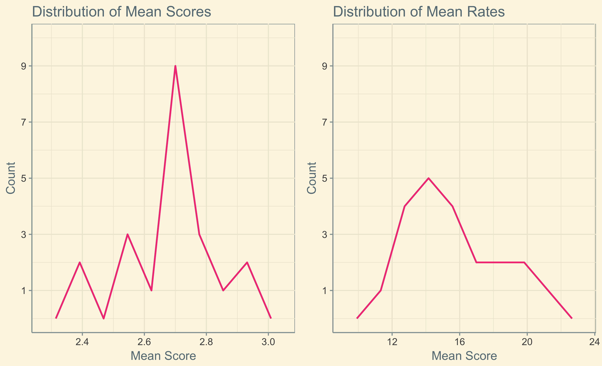
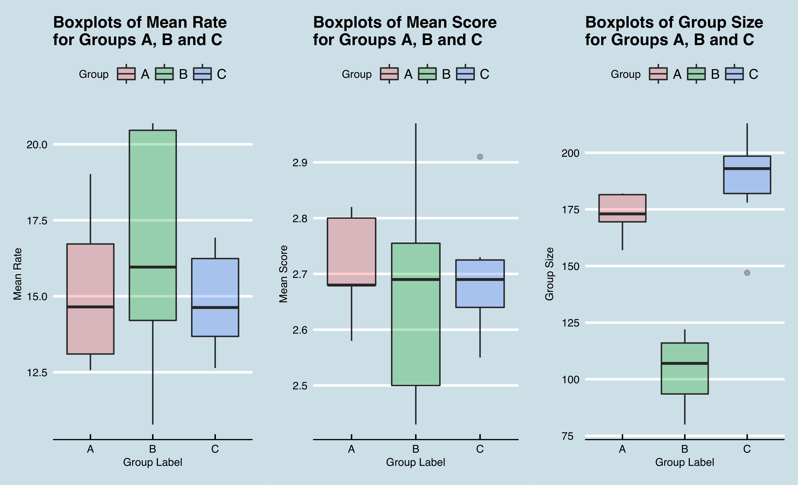
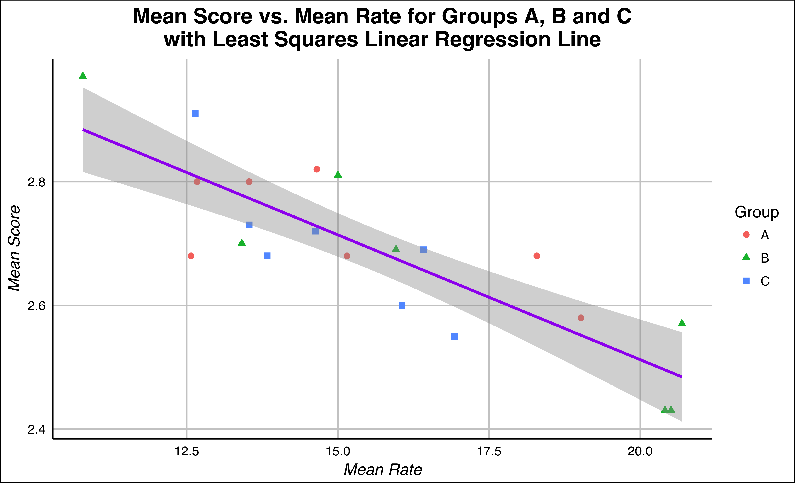
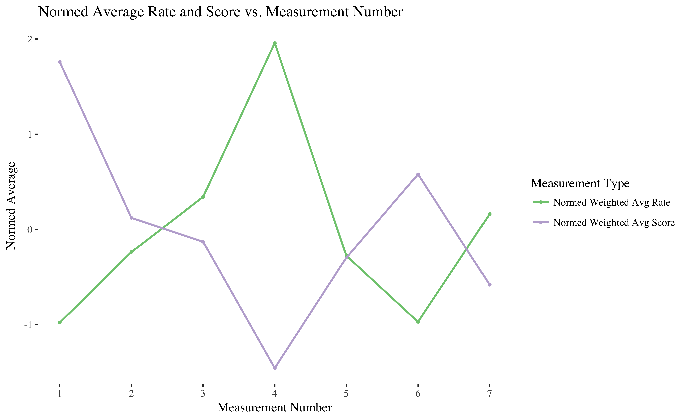
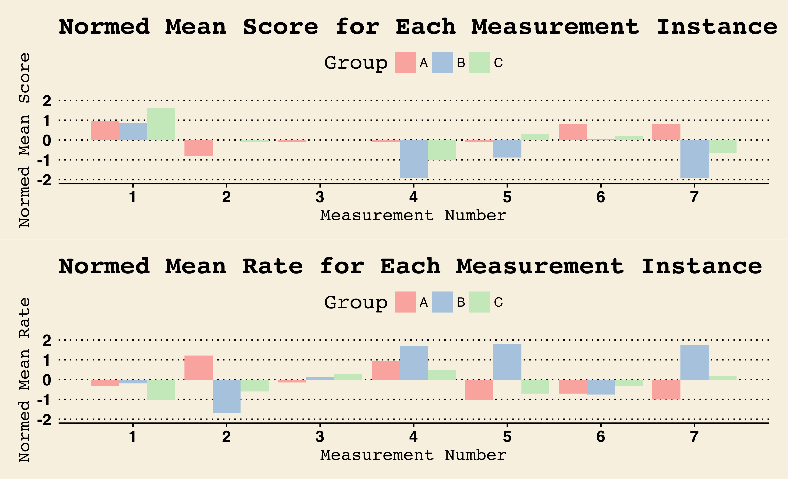
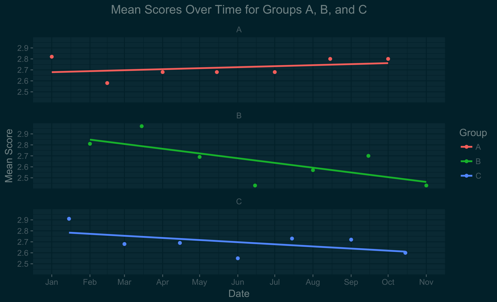
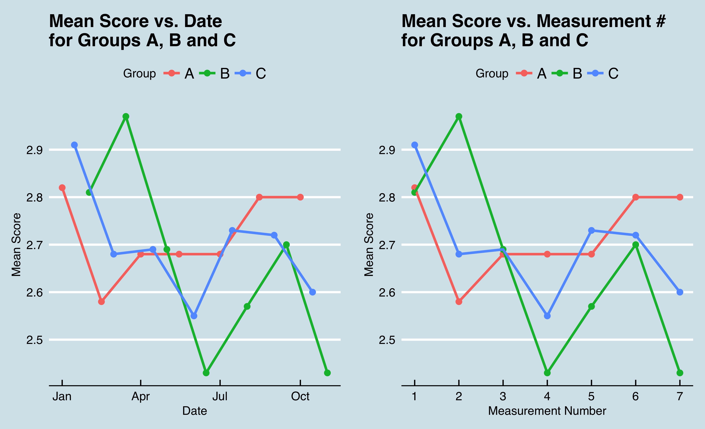

ANLY-503 Homework 3
Assignment
Create 7 visualizations using qplot and/or ggplot that explore and explain the data. Look into relationships, trends, differences between groups, temporal changes, etc. Your goals are to first explore the data, next explain the data, and finally, reach some conclusions about the data. Form/write your explanations and conclusions *very* succinctly and concisely. The fewer words the better.
Requirements
- You must use faceting at least once
- You must use color in all visualizations
- You must have at least one collection of subplots
- ALL plots must use a theme (ggthemes)
Introduction
We have a data set with 21 observations of 5 variables: the date, the mean rate (where lower is better), the mean score (where higher is better), the group size, and the group label (A, B, or C).
Group A has mean rate, mean score and group size measurements on January 1, 2015. Group C has measurements a half month later on January 15, 2015. Group B has measurements a half month after that, on February 1, 2015. This pattern continues, with each group having a measurement every one and a half months, on either the 1st or 15th of the month through November 1, 2015, at which point there are 7 measurements for each of the three groups.
We do not have any information about what this data represents, but will nevertheless attempt to glean some insights.
Visualization 1
Visual: Understanding the Distributions of the Data
Insight
Here, we can see that overall, mean scores are slightly left skewed, and mean rates are slightly right skewed. For both mean scores and mean rates, 13 out of the 21 points fall into the peak bin and the two adjacent bins, though mean scores has a higher peak, with 9 data points falling into that bin.
Visualization 2
Visual: Understanding the Distributions of the Data for Each Group
Insight
On average, the mean rates and mean scores seem fairly similar for the three groups, but we can see that the variance of the mean scores and mean rates is by far the greatest for Group B. This may be due to the different sizes of the groups: in all instances, Group B is significantly smaller than Groups A and C. Group A also tends to be smaller than Group C, and we can see that its mean rates and scores have a slightly greater variance (taller box in the boxplot) than those of Group C.
Visualization 3
Visual: The Relationship Between Mean Score and Mean Rate
Insight
There is a clear negative correlation between mean score and mean rate. A statistical test shows that the p-value for this correlation is -0.84. Group B has several points at the far outer edges of the plot with the lowest mean rates and highest mean scores, or highest mean rates and lowest mean scores. Beyond this, though, there is no apparent difference between the three groups.
Visualization 4
Visual: The Relationship Between Normed Weighted Average Rates and Scores Over Time
Insight
For this visual, I computed a weighted average mean rate and weighted average mean score (weighted by group size) for each measurement number. This visual further highlights the overall negative relationship between mean rate and mean score; the two lines are almost mirror images of each other.
Visualization 5
Visual: The Relationship Between Normed Weighted Average Rates and Scores Over Time by Group
Insight
Here, we can also see the negative correlation between mean rate and mean score (for most of the bars, they have opposite signs in the mean rate and mean score plots). However, the negative correlation is less dramatic when we do not average the three groups. And in some cases (e.g. Measurement 2 Group C, Measurement 5 Group A), the signs of the normed mean rate and normed mean score are the same.
Visualization 6
Visual: How Mean Scores Change Over Time for the Different Groups
Insight
The relationship between mean score and time does not appear to be very linear for any of the groups; many of the points are not too close to the least squares linear regression lines. All three groups have lower scores at the end than the beginning, but Group A's score decreases the least and, starting from the second measurement, Group A's score has an upward trend. Even including the first measurement, the slope of the regression line for Group A is positive, unlike the regression lines of the other two groups.
Visualization 7
Visual: Further Insights into the Evolution of Mean Score Over Time
Insight
For this visualization, I plotted the mean score vs. date for all three groups in the same plot. I also created an additional variable -- measurement number -- to indicate which of the 7 measurements was being described for each group. Plotting mean score vs. measurement number essentially shifts group C to the left by half a month, and group B to the left by a full month. Neither of these plots are especially revealing, but perhaps with knowledge about how the three groups differ, the differences in how score changed over time for the three groups would make sense.
Conclusion
Overall this visualization led to a few key findings:
- Group A performed the best of the three groups, with the lowest rate and highest score at the end.
- Mean score and mean rate had a strong negative correlation.
- Group B was the smallest of the three groups, and -- possibly as a result -- had the largest variance in its mean scores and rates.
- There was significant fluctuation over time in mean rates and mean scores for all three groups, without a strong pattern.